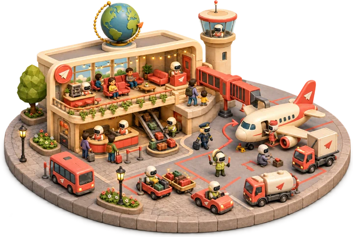
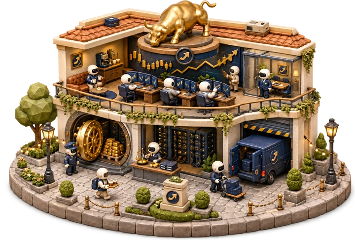
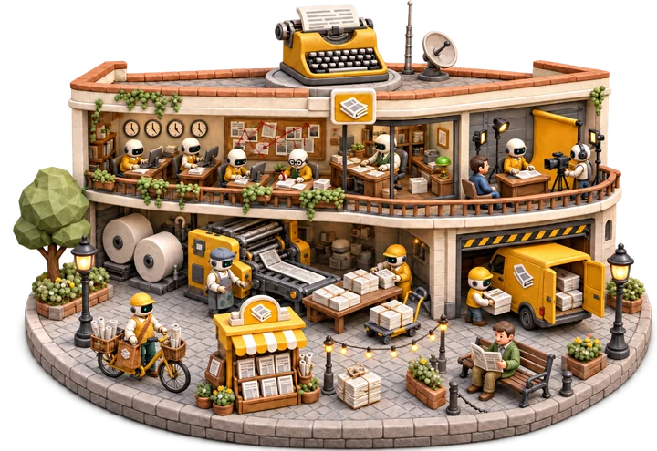
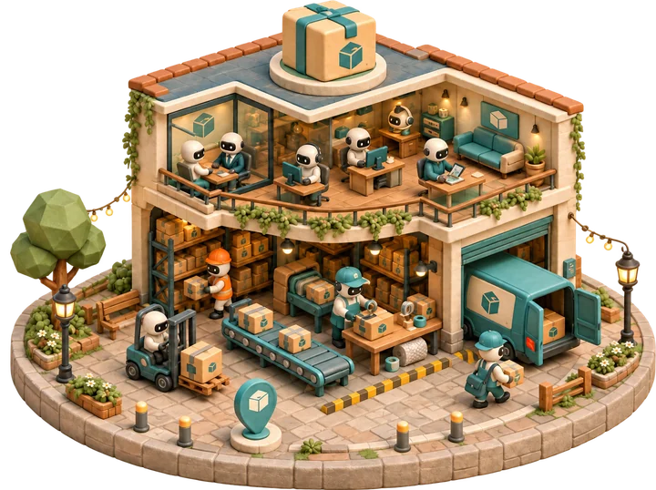
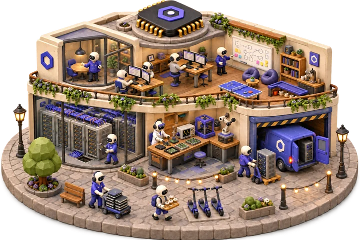

MiniCorp, Our Vision
The last mile to AGI is a company that runs itself. It needs autonomous enterprise agents who can do a real job and make business decisions — and the enterprise data that would train them is locked behind privacy, sold at a premium out of bankrupt companies' archives, or left unusable until expensive experts label it. So we are researching and building synthetic companies: high-fidelity simulators for studying AI-run companies and a scalable source of longitudinal and counterfactual enterprise data.
Research